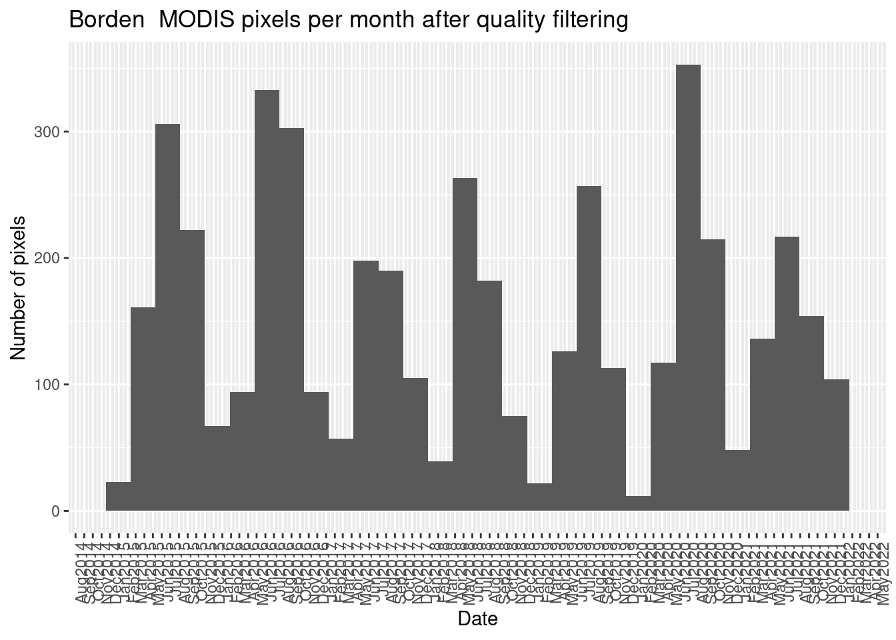

![]()
$state_1km
[1] 1033 40969 8392 1034 40970 5384 1289 1801 45068 1545 8397 8398
[13] 1032 8396 8393 5128 40973 40974 45064 8394 32781 206 36872 32778
[25] 32777 5640 36876 32776 45066 8334 200 138 136 8 72 8264
[37] 1544 8332 1802 1288 8328 1546 8268 8330 8205 76 204 141
[49] 140 8204 40972 8266 137 1290 74 1800 32780 5896 40968 205
[61] 202 201 8329 8270 5385 5898 5642
$gflags
[1] 0
$qc_500m
[1] 1073741824 1073968181 1073954817 1075838976 1073968129 1073755137
[7] 1073755189 1075852341 1076065281 1946383413 1073969013 1073954869
[13] 1075852289 1076065333 1076051969 1075576832 1075590145 1075803189
$q_scan
[1] 14 8 9 2 0 6 15 3 13 11 12 1 7 10 5 4MODIS and the bit strings
Intro about what is MODIS, where to find the data, bands, metadata and the variables with the bits.
Bit string conversion
This is a document that will stay in the project as a reference of the building of the process and products to do the bit string conversion per each of the MODIS pixels that I have in the research data.
For testing, exploring and validating the process, the reflectance_500 dataset was used. Nonetheless, final products written in separate documents will contain the necessary changes to be applied to the rest of datasets obtained from MODIS.
Variables to convert to bit strings
There are 4 variables in the dataset with a bitmask that needs to be converted:
state_1kmgflagsqc_500mq_scan
How many unique values do I have per each of the quality variables?
What is the idea behind the bit mask conversion?
On minute 2:34 of this USGS video I can find an explanation of part of the process.
It states that each pixel contains an integer value that must be converted to a bit binary value. This can be done with the base R function intToBits()
How can I apply the idea to MODIS data?
I’m going to follow this guide in order to clean the pixels with low quality.
- If I just run the
inToBits()function, I will obtain a long bit string, with more information than what I need. That’s why I need to shorten this bit string and transform it to an integer.
- Remember that this has to be read from left to right. So the first bit is
- The 8 bits are numbered from 0 to 7 (as opposed to the R default).
- Each bit represents a power of 2.
- We need to reverse this bit string
[1] 0 0 0 0 1 1 1 0QC_Data <- data.frame(Integer_Value = 0:255,
Bit7 = NA,
Bit6 = NA,
Bit5 = NA,
Bit4 = NA,
Bit3 = NA,
Bit2 = NA,
Bit1 = NA,
Bit0 = NA,
QA_word1 = NA,
QA_word2 = NA,
QA_word3 = NA,
QA_word4 = NA
)
for (i in QC_Data$Integer_Value) {
# print(i)
AsInt <- as.integer(intToBits(i)[1:8])
QC_Data[i + 1, 2:9] <- AsInt[8:1]
}Validation of the process
Given the steps provided in the tutorial, and the information obtained from the USGS video, I can follow the steps and test if I’m obtaining the correct bit string value based on this information:

# Using one bitmask value from the dataset
a <- as.integer(intToBits(1075803189)[1:32])
b <- a[32:1]
# Using the example value from video
a <- as.integer(intToBits(1131675649)[1:32])
b <- a[32:1]
# This one is the result of the binary transformation from the video
validation <- c(0,1,0,0,0,0,1,1,0,1,1,1,0,1,0,0,0,0,0,0,0,0,0,0,0,0,0,0,0,0,0,1)
# Check if object is the same as the one written by hand
stopifnot(b == validation)- The steps does match the final result. Next, I need to apply the same logical conditions to my data.
Code to apply the bit string conversion to the variables
Now that I know which steps are needed to do the conversion, I need to develop the code further to apply it to each of the variables with a bit mask. On this first try, I will do it with the variable qc_500m
# Test with qc_500
## Check unique values and add one validation (from the video)
qc_data <- data.frame(qc_ints = c(unique(reflectance_500$qc_500m), 1131675649))
## Create empty data frame. This case is 32 given that the variable
## `qc_500m` have 32 bits
for (i in c(31:0)) {
qc_data[, paste0("bit_", i)] <- NA
}
# Loop for obtaining bit string from unique values in the variable
z <- 1
for (i in qc_data$qc_ints) {
# print(i)
transformed <- as.integer(intToBits(i)[1:32])
qc_data[z, 2:33] <- transformed[32:1]
z <- z + 1
}
## Create test according to value in video
process_test <- qc_data |>
filter(qc_ints == 1131675649) |>
select(-qc_ints) |>
unite(col = "new", bit_31:bit_0, sep = "") |>
pull()
stopifnot(process_test == "01000011011101000000000000000001")- Given that I have the bit wise conversion done, I can start with the categorization of the quality.
Categories for each of the bit strings
Continuing with the variable qc_500m from which I have already the bit strings, I can follow the MODIS documentation to add the categories for each combination of bits.
This steps can be done in two different ways: using conditionals for each of the bits, or joining the variables with the specif bits:
One possible solution
qc_data |>
mutate(modland_qa = case_when(
bit_1 == 0 & bit_0 == 0 ~ "ideal quality - all bands",
bit_1 == 0 & bit_0 == 1 ~ "less than ideal quality - some or all bands",
bit_1 == 1 & bit_0 == 0 ~ "product not produced due to cloud effects",
bit_1 == 1 & bit_0 == 1 ~ "product not produced for other reasons",
TRUE ~ "No info, please validate bit conversion"
)) |>
paged_table()Second possible solution
# Second possible solution
qc_data |>
unite(col = "modland", c("bit_1", "bit_0"), sep = "") |>
mutate(modland_qa = case_when(
modland == "00" ~ "ideal quality - all bands",
modland == "01" ~ "less than ideal quality - some or all bands",
modland == "10" ~ "product not produced due to cloud effects",
modland == "11" ~ "product not produced for other reasons",
TRUE ~ "No info, please validate bit conversion"
)) |>
paged_table()- I think that it would be easy to read the conditions with the second solution.
- For each of the series of bits, I’m going to paste them as just one column.
qc_500m complete bit string categories
The following chunk of code contains all the steps to include all the categories specified in the MODIS documentation. The result of this step will be a data frame with
qc_500_description <- qc_data |>
unite(col = "modland", c("bit_1", "bit_0"), sep = "") |>
unite(col = "band_1",
c("bit_5", "bit_4", "bit_3", "bit_2"), sep = "") |>
unite(col = "band_2",
c("bit_9", "bit_8", "bit_7", "bit_6"), sep = "") |>
unite(col = "band_3",
c("bit_13", "bit_12", "bit_11", "bit_10"), sep = "") |>
unite(col = "band_4",
c("bit_17", "bit_16", "bit_15", "bit_14"), sep = "") |>
unite(col = "band_5",
c("bit_21", "bit_20", "bit_19", "bit_18"), sep = "") |>
unite(col = "band_6",
c("bit_25", "bit_24", "bit_23", "bit_22"), sep = "") |>
unite(col = "band_7",
c("bit_29", "bit_28", "bit_27", "bit_26"), sep = "") |>
mutate(modland_qa = case_when(
modland == "00" ~ "ideal quality - all bands",
modland == "01" ~ "less than ideal quality - some or all bands",
modland == "10" ~ "product not produced due to cloud effects",
modland == "11" ~ "product not produced for other reasons",
TRUE ~ "No info, please validate bit conversion"
)) |>
mutate(band1_qa = case_when(
band_1 == "0000" ~ "highest_quality",
band_1 == "0111" ~ "noisy detector",
band_1 == "1000" ~ "dead detector, data interpolated in L1B",
band_1 == "1001" ~ "solar zenith >= 86 degrees",
band_1 == "1010" ~ "solar zenith >= 85 and < 86 degrees",
band_1 == "1011" ~ "missing input",
band_1 == "1100" ~ "internal constant used",
band_1 == "1101" ~ "correction out of bounds",
band_1 == "1110" ~ "L1B data faulty",
band_1 == "1111" ~ "not processed due to deep ocean or clouds",
TRUE ~ "No info, please validate bit conversion"
)) |>
mutate(band2_qa = case_when(
band_2 == "0000" ~ "highest_quality",
band_2 == "0111" ~ "noisy detector",
band_2 == "1000" ~ "dead detector, data interpolated in L1B",
band_2 == "1001" ~ "solar zenith >= 86 degrees",
band_2 == "1010" ~ "solar zenith >= 85 and < 86 degrees",
band_2 == "1011" ~ "missing input",
band_2 == "1100" ~ "internal constant used",
band_2 == "1101" ~ "correction out of bounds",
band_2 == "1110" ~ "L1B data faulty",
band_2 == "1111" ~ "not processed due to deep ocean or clouds",
TRUE ~ "No info, please validate bit conversion"
)) |>
mutate(band3_qa = case_when(
band_3 == "0000" ~ "highest_quality",
band_3 == "0111" ~ "noisy detector",
band_3 == "1000" ~ "dead detector, data interpolated in L1B",
band_3 == "1001" ~ "solar zenith >= 86 degrees",
band_3 == "1010" ~ "solar zenith >= 85 and < 86 degrees",
band_3 == "1011" ~ "missing input",
band_3 == "1100" ~ "internal constant used",
band_3 == "1101" ~ "correction out of bounds",
band_3 == "1110" ~ "L1B data faulty",
band_3 == "1111" ~ "not processed due to deep ocean or clouds",
TRUE ~ "No info, please validate bit conversion"
)) |>
mutate(band4_qa = case_when(
band_4 == "0000" ~ "highest_quality",
band_4 == "0111" ~ "noisy detector",
band_4 == "1000" ~ "dead detector, data interpolated in L1B",
band_4 == "1001" ~ "solar zenith >= 86 degrees",
band_4 == "1010" ~ "solar zenith >= 85 and < 86 degrees",
band_4 == "1011" ~ "missing input",
band_4 == "1100" ~ "internal constant used",
band_4 == "1101" ~ "correction out of bounds",
band_4 == "1110" ~ "L1B data faulty",
band_4 == "1111" ~ "not processed due to deep ocean or clouds",
TRUE ~ "No info, please validate bit conversion"
)) |>
mutate(band5_qa = case_when(
band_5 == "0000" ~ "highest_quality",
band_5 == "0111" ~ "noisy detector",
band_5 == "1000" ~ "dead detector, data interpolated in L1B",
band_5 == "1001" ~ "solar zenith >= 86 degrees",
band_5 == "1010" ~ "solar zenith >= 85 and < 86 degrees",
band_5 == "1011" ~ "missing input",
band_5 == "1100" ~ "internal constant used",
band_5 == "1101" ~ "correction out of bounds",
band_5 == "1110" ~ "L1B data faulty",
band_5 == "1111" ~ "not processed due to deep ocean or clouds",
TRUE ~ "No info, please validate bit conversion"
)) |>
mutate(band6_qa = case_when(
band_6 == "0000" ~ "highest_quality",
band_6 == "0111" ~ "noisy detector",
band_6 == "1000" ~ "dead detector, data interpolated in L1B",
band_6 == "1001" ~ "solar zenith >= 86 degrees",
band_6 == "1010" ~ "solar zenith >= 85 and < 86 degrees",
band_6 == "1011" ~ "missing input",
band_6 == "1100" ~ "internal constant used",
band_6 == "1101" ~ "correction out of bounds",
band_6 == "1110" ~ "L1B data faulty",
band_6 == "1111" ~ "not processed due to deep ocean or clouds",
TRUE ~ "No info, please validate bit conversion"
)) |>
mutate(band7_qa = case_when(
band_7 == "0000" ~ "highest_quality",
band_7 == "0111" ~ "noisy detector",
band_7 == "1000" ~ "dead detector, data interpolated in L1B",
band_7 == "1001" ~ "solar zenith >= 86 degrees",
band_7 == "1010" ~ "solar zenith >= 85 and < 86 degrees",
band_7 == "1011" ~ "missing input",
band_7 == "1100" ~ "internal constant used",
band_7 == "1101" ~ "correction out of bounds",
band_7 == "1110" ~ "L1B data faulty",
band_7 == "1111" ~ "not processed due to deep ocean or clouds",
TRUE ~ "No info, please validate bit conversion"
)) |>
mutate(atmospheric_correction = ifelse(bit_30 == 0, "no", "yes"),
adjacency_correction = ifelse(bit_31 == 0, "no", "yes"))state_1km proof of concept for
Here, I’m going to apply the same process described above to the variable state_1km. This one needs just 16 bits, so there have to be some changes in the code indicating the quantity of bits to be used.
# Test with qc_500
## Check unique values and add one validation (from the video)
qc_data <- data.frame(qc_ints = c(unique(reflectance_500$state_1km),
1131675649))
## Create empty data frame. This case is 32 given that the variable
## `qc_500m` have 32 bits
for (i in c(15:0)) {
qc_data[, paste0("bit_", i)] <- NA
}
# Loop for obtaining bit string from unique values in the variable
z <- 1
for (i in qc_data$qc_ints) {
# print(i)
transformed <- as.integer(intToBits(i)[1:16])
qc_data[z, 2:17] <- transformed[16:1]
z <- z + 1
}
## Create test according to value in video
process_test <- qc_data |>
filter(qc_ints == 1131675649) |>
select(-qc_ints) |>
unite(col = "new", bit_15:bit_0, sep = "") |>
pull()
stopifnot(process_test == "0000000000000001")Create function for bit string conversion
At this point I have the skeleton of the code needed to create a function to be applied to the next variables. It has to take into account the variable and the number of bits to be used in the bit mask conversion.
# Transform this to a function
obtain_bit_qc_df <- function(variable, bits) {
## Check unique values and add one validation (from the video)
qc_data <- data.frame(qc_ints = c(unique(reflectance_500[[variable]]),
1131675649))
## Create empty data frame. This case is 32 given that the variable
## `qc_500m` have 32 bits
total_bits = bits - 1
for (i in c(total_bits:0)) {
qc_data[, paste0("bit_", i)] <- NA
}
# Loop for obtaining bit string from unique values in the variable
bit_col <- bits + 1
z <- 1
for (i in qc_data$qc_ints) {
# print(i)
transformed <- as.integer(intToBits(i)[1:bits])
qc_data[z, 2:bit_col] <- transformed[bits:1]
z <- z + 1
}
## Create test according to value in video
final_bit <- paste0("bit_", total_bits)
process_test <- qc_data |>
filter(qc_ints == 1131675649) |>
select(-qc_ints) |>
unite(col = "new", everything(), sep = "") |>
pull()
test_object <- stringr::str_sub("01000011011101000000000000000001",
start = -bits, end = -1)
stopifnot(process_test == test_object)
return(qc_data)
}- Test the function as first step to obtain the quality categories
# Create the categories according to documentation
state_1km__description <- qc_data_function |>
unite(col = "cloud_state", c("bit_1", "bit_0"), sep = "") |>
unite(col = "land_water_flag",
c("bit_5", "bit_4", "bit_3"), sep = "") |>
unite(col = "aerosol_quantity",
c("bit_7", "bit_6"), sep = "") |>
unite(col = "cirrus_detected",
c("bit_9", "bit_8"), sep = "") |>
mutate(cloud_state_qa = case_when(
cloud_state == "00" ~ "clear",
cloud_state == "01" ~ "cloudy",
cloud_state == "10" ~ "mixed",
cloud_state == "11" ~ "not set, assumed clear",
TRUE ~ "No info, please validate bit conversion"
)) |>
mutate(cloud_shadow_qa = ifelse(bit_2 == 1, "yes", "no")) |>
mutate(land_water_qa = case_when(
land_water_flag == "000" ~ "shallow ocean",
land_water_flag == "001" ~ "land",
land_water_flag == "010" ~ "ocean coastlines and lake shorelines",
land_water_flag == "011" ~ "shallow inland water",
land_water_flag == "100" ~ "ephemeral water",
land_water_flag == "101" ~ "deep inland water",
land_water_flag == "110" ~ "continental/moderate ocean",
land_water_flag == "111" ~ "deep ocean",
TRUE ~ "No info, please validate bit conversion"
)) |>
mutate(aerosol_quantity_qa = case_when(
aerosol_quantity == "00" ~ "climatology",
aerosol_quantity == "01" ~ "low",
aerosol_quantity == "10" ~ "average",
aerosol_quantity == "11" ~ "high",
TRUE ~ "No info, please validate bit conversion"
)) |>
mutate(cirrus_detected_qa = case_when(
cirrus_detected == "00" ~ "none",
cirrus_detected == "01" ~ "small",
cirrus_detected == "10" ~ "average",
cirrus_detected == "11" ~ "high",
TRUE ~ "No info, please validate bit conversion"
)) |>
mutate(cloud_flag_qa = ifelse(bit_10 == 1, "cloud", "no cloud"),
fire_flag_qa = ifelse(bit_11 == 1, "fire", "no fire"),
snow_ice_flag_qa = ifelse(bit_12 == 1, "yes", "no"),
pixel_adjacent_cloud_qa = ifelse(bit_13 == 1, "yes", "no"),
salt_pan_qa = ifelse(bit_14 == 1, "yes", "no"),
snow_mask_qa = ifelse(bit_15 == 1, "yes", "no"))g_flags
It looks that this variable have just the same value for every observation:
Given that I don’t have any values there other than 0, I’m not going to apply the function to this variable.
q_scan
# Obtain the bit string
qc_data <- obtain_bit_qc_df(variable = "q_scan", bits = 8)
# Create the categories according to documentation
q_scan_description <- qc_data |>
mutate(scan_quadrant_1 = ifelse(bit_0 == 1, "yes", "no"),
scan_quadrant_2 = ifelse(bit_0 == 1, "yes", "no"),
scan_quadrant_3 = ifelse(bit_0 == 1, "yes", "no"),
scan_quadrant_4 = ifelse(bit_0 == 1, "yes", "no"),
missing_obs_1 = ifelse(bit_1 == 1, "same", "different"),
missing_obs_2 = ifelse(bit_1 == 1, "same", "different"),
missing_obs_3 = ifelse(bit_1 == 1, "same", "different"),
missing_obs_4 = ifelse(bit_1 == 1, "same", "different"))Conclusions on the bit mask conversion
- All steps and references are documented.
- I created a function to do the bit mask conversion
- Function will be exported to a new file and documented as a formal function in R to be used in the next steps for the data analysis.
- After using the function, steps to include the correspondent categories according to the official MODIS documentation are needed.
- The new data frames with the bit strings and the categories per each unique value will be used to filter the all the original observations from the datasets.
- All these are cleaned and written as a runtime process in the file
scripts/create_bitstrings_tables.R. The outcome of this script will be used formally in the next steps of the research data analysis.
Quality filtering
Now that I have validated the function and I have per each of the variables with bit mask the categories obtained from the MODIS documentation, I can start with filtering out those pixels with low quality.
Select bitmasks categories that indicates high quality
- First I will start with
state_1km
# quality values from state_1km
# bit 6-7 and bit 13 can be anything as regarded by richard
state_1km_highest_quality <- state_1km__description |>
filter(cloud_state_qa == "clear") |>
filter(cloud_shadow_qa == "no") |>
filter(land_water_qa == "land") |>
filter(cirrus_detected_qa == "none") |>
filter(bit_10 == "0") |>
filter(fire_flag_qa == "no fire") |>
filter(snow_ice_flag_qa == "no") |>
filter(bit_14 == "0") |>
filter(bit_15 == "0") |>
select(qc_ints) |>
pull()
state_1km_highest_quality[1] 8392 200 136 8 72 8264 8328- Filtering with
qc_500m
# quality values from qc_500
# All should be 0 for all of the bits, except for
qc_500_highest_quality <- qc_500_description |>
filter(modland_qa == "ideal quality - all bands") |>
filter(band1_qa == "highest_quality") |>
filter(band2_qa == "highest_quality") |>
filter(band3_qa == "highest_quality") |>
filter(band4_qa == "highest_quality") |>
filter(band5_qa == "highest_quality") |>
filter(band6_qa == "highest_quality") |>
filter(band7_qa == "highest_quality") |>
filter(atmospheric_correction == "yes") |>
# filter(adjacency_correction == "yes") |>
select(qc_ints) |>
pull()
qc_500_highest_quality[1] 1073741824- Filtering with q_scan
From the meeting with Richard Fernandes, we agreed to leave this one out.
- Filtering with gflags
For the reflectance_500 dataset, we have the same value in all the observations
Filter from complete data the selected bitmasks
So far, I have the bitmasks that indicates the highest quality, so I can filter out the rest from the reflectance_500 dataset
state_1km_filter <- reflectance_500 |>
filter(state_1km %in% state_1km_highest_quality) |>
nrow()
state_1km_filter[1] 4586Those number of observations represents just the filtering based on the state_1km variable. Now, I will continue with the qc_500 variable:
Some plots with clean reflectance_500 data
reflectance_500 |>
filter(state_1km %in% state_1km_highest_quality) |>
select(date) |>
# pull() |>
mutate(year_month = zoo::as.yearmon(date)) |>
ggplot(aes(x = date)) +
geom_histogram() +
scale_x_date(date_labels = "%b%Y", breaks = "months") +
theme(axis.text.x = element_text(angle = 90, h = 1)) +
labs(x = "Date",
y = "Number of pixels",
title = "Borden MODIS pixels per month after quality filtering")`stat_bin()` using `bins = 30`. Pick better value with `binwidth`.
Conclusion
- Function
obtain_bit_qc_df()can be used to do the bit string conversion - All steps are summarized in the function. Code here is just the historical reference. Functional and documented code for the function is in the
R/create_bit_string.Rfile. - The code to create the human readable categories from the bit strings so that bad/high quality filtering of the pixels can be done in the analysis is in the
scripts/create_bitstrings_tables.R.
Reuse
Citation
BibTeX citation:
@online{a. hernandez mora2023,
author = {A. Hernandez Mora, Ronny},
title = {MODIS Pixel Bit Strings Conversion with {R}},
date = {2023-12-25},
url = {https://ronnyale.com//posts/2023-12-25-modis-bitstring},
langid = {en}
}
For attribution, please cite this work as:
A. Hernandez Mora, Ronny. 2023. “MODIS Pixel Bit Strings
Conversion with R.” December 25, 2023. https://ronnyale.com//posts/2023-12-25-modis-bitstring.